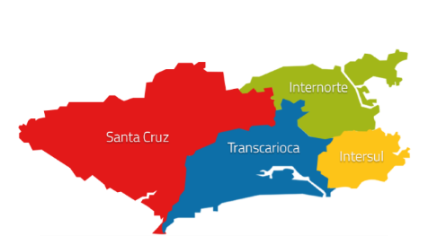

Prefeitura do Rio divulga Ranking de Conservação dos ônibus com mais reclamações
postado em 07 de abril de 2015 Os dados revelam as linhas com maior número de reclamações. Segundo a Prefeitura do Rio as críticas feitas pelos passageiros servem de parâmetro para as fiscalizações:
1) Consórcio Santa Cruz
2) Consórcio Internorte
3) Consórcio Transcarioca
Postado por Clayson
Rio de Janeiro já começa a ter ônibus sem padronização por consórcio
postado em 18 de junho de 2018
O primeiro ônibus do sistema municipal do Rio de Janeiro já com a pintura da empresa, sem a padronização por cosórcio, já foi visto circulando nas ruas da cidade.
O veículo pertence à Viaçâo Ideal, do Grupo Guanabara, do empresário Jacob Barata
A empresa integra o consórcio Internorte
Postado por Nick